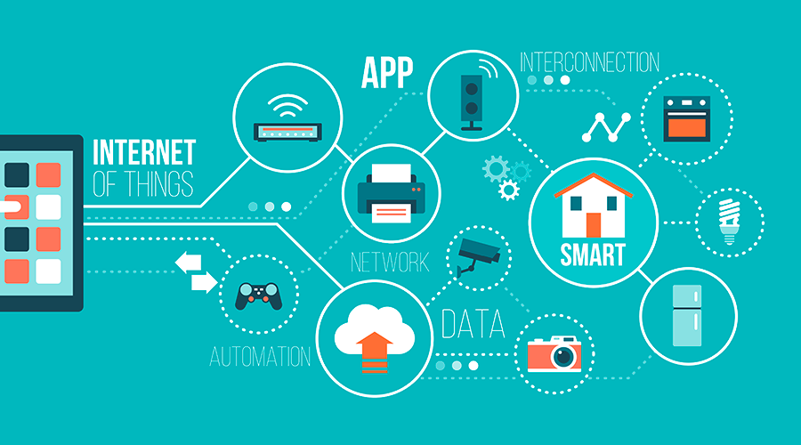

Servicios de Internet

Internet ofrece una amplia gama de servicios que facilitan la comunicación, el acceso a la
información y el intercambio de datos a nivel global. Estos servicios se pueden dividir
en dos grandes categorías: servicios síncronos, que funcionan en tiempo real, como las
videoconferencias y el chat, y servicios asíncronos, que no requieren que los usuarios
estén conectados simultáneamente, como el correo electrónico o la transferencia de archivos.
Gracias a estos servicios, las personas y las empresas pueden comunicarse eficazmente,
compartir recursos y colaborar desde cualquier parte del mundo, lo que ha transformado
profundamente la forma en que vivimos, trabajamos y nos relacionamos.
World Wide Web (WWW)
La World Wide Web, comúnmente conocida como WWW o simplemente web, fue creada a principios
de los años 90 y revolucionó la manera en que accedemos a la información en Internet. A
diferencia de las primeras redes que solo permitían el intercambio de texto, la WWW permite
la publicación y el acceso a contenidos multimedia, como imágenes, videos, audios y documentos
interactivos. Funciona mediante el sistema de hipertexto, que enlaza páginas web entre sí
a través de enlaces, y utiliza el protocolo HTTP para la transferencia de datos. Los usuarios
acceden a la web mediante navegadores como Google Chrome, Firefox o Safari, que interpretan
el código HTML y otros lenguajes para mostrar la información de forma amigable. La WWW ha
sido clave para la democratización del acceso al conocimiento y la creación de espacios de
interacción digital.
Buscadores
 Con la enorme cantidad de información disponible en la web, encontrar datos específicos puede
ser un desafío. Aquí es donde los buscadores juegan un papel fundamental. Estos motores de
búsqueda, como Google, Bing o DuckDuckGo, permiten a los usuarios localizar rápidamente páginas
web relevantes mediante la introducción de palabras clave o frases. Los buscadores utilizan
algoritmos avanzados que analizan, indexan y clasifican millones de páginas para ofrecer
resultados precisos y ordenados por relevancia. No obstante, no todos los sitios web están
indexados, ya que algunos están protegidos por contraseñas, no cumplen con ciertos criterios
de calidad o están bloqueados por los administradores de la red. Además, los buscadores
también ofrecen servicios complementarios como mapas, noticias, imágenes y vídeos, ampliando
su utilidad.
Con la enorme cantidad de información disponible en la web, encontrar datos específicos puede
ser un desafío. Aquí es donde los buscadores juegan un papel fundamental. Estos motores de
búsqueda, como Google, Bing o DuckDuckGo, permiten a los usuarios localizar rápidamente páginas
web relevantes mediante la introducción de palabras clave o frases. Los buscadores utilizan
algoritmos avanzados que analizan, indexan y clasifican millones de páginas para ofrecer
resultados precisos y ordenados por relevancia. No obstante, no todos los sitios web están
indexados, ya que algunos están protegidos por contraseñas, no cumplen con ciertos criterios
de calidad o están bloqueados por los administradores de la red. Además, los buscadores
también ofrecen servicios complementarios como mapas, noticias, imágenes y vídeos, ampliando
su utilidad.
Correo Electrónico
El correo electrónico es uno de los servicios más antiguos y esenciales de Internet. Permite el
envío y recepción de mensajes escritos entre usuarios de forma rápida y eficiente. Más allá de
simples mensajes de texto, el correo electrónico puede incluir archivos adjuntos, enlaces y
formatos multimedia. Es una herramienta imprescindible tanto en la vida personal como en el
ámbito profesional, facilitando la comunicación entre colegas, clientes y proveedores sin
las limitaciones del horario o la ubicación geográfica. Los sistemas de correo electrónico
funcionan mediante servidores específicos que almacenan y gestionan los mensajes, y existen
múltiples plataformas como Gmail, Outlook o Yahoo Mail que ofrecen funcionalidades adicionales
como filtros anti-spam, calendarios y agendas integradas.
Chat
 El chat es un servicio que permite la comunicación instantánea entre dos o más personas mediante
mensajes escritos, que se envían y reciben en tiempo real. Este tipo de comunicación es especialmente
útil para conversaciones rápidas, soporte técnico, colaboración en proyectos o simplemente para
socializar. Las aplicaciones de chat pueden incluir funciones avanzadas como envío de archivos,
videollamadas, grupos de conversación y emojis, enriqueciendo la experiencia comunicativa. Hoy
en día, plataformas como WhatsApp, Telegram o Slack son esenciales tanto para uso personal como
profesional, permitiendo mantener el contacto constante y facilitar la coordinación entre equipos
de trabajo distribuidos geográficamente.
El chat es un servicio que permite la comunicación instantánea entre dos o más personas mediante
mensajes escritos, que se envían y reciben en tiempo real. Este tipo de comunicación es especialmente
útil para conversaciones rápidas, soporte técnico, colaboración en proyectos o simplemente para
socializar. Las aplicaciones de chat pueden incluir funciones avanzadas como envío de archivos,
videollamadas, grupos de conversación y emojis, enriqueciendo la experiencia comunicativa. Hoy
en día, plataformas como WhatsApp, Telegram o Slack son esenciales tanto para uso personal como
profesional, permitiendo mantener el contacto constante y facilitar la coordinación entre equipos
de trabajo distribuidos geográficamente.
FTP (File Transfer Protocol)
El protocolo FTP es una herramienta fundamental para la transferencia de archivos entre computadoras
conectadas a través de Internet o redes locales. Su función principal es permitir la subida y descarga
de archivos a y desde servidores remotos, facilitando el manejo de grandes volúmenes de datos o
actualizaciones de sitios web. FTP puede ser utilizado tanto por usuarios avanzados como por
administradores de sistemas para gestionar contenidos, hacer copias de seguridad o distribuir
software. Aunque es un protocolo muy extendido, actualmente existen alternativas más seguras
como SFTP (FTP seguro) o FTPS, que incorporan cifrado para proteger la información durante la
transferencia.
Videoconferencia
La videoconferencia es una tecnología que combina audio y video en tiempo real para permitir reuniones
virtuales entre personas ubicadas en diferentes lugares. Este servicio ha cobrado especial relevancia
en los últimos años, impulsado por el teletrabajo y la educación a distancia. Las plataformas de
videoconferencia, como Zoom, Microsoft Teams o Google Meet, ofrecen funciones que van desde la simple
comunicación visual hasta compartir pantalla, grabar sesiones y colaborar en documentos simultáneamente.
Esto mejora significativamente la interacción y la productividad en entornos remotos, acercando a
usuarios y equipos sin importar las distancias físicas.